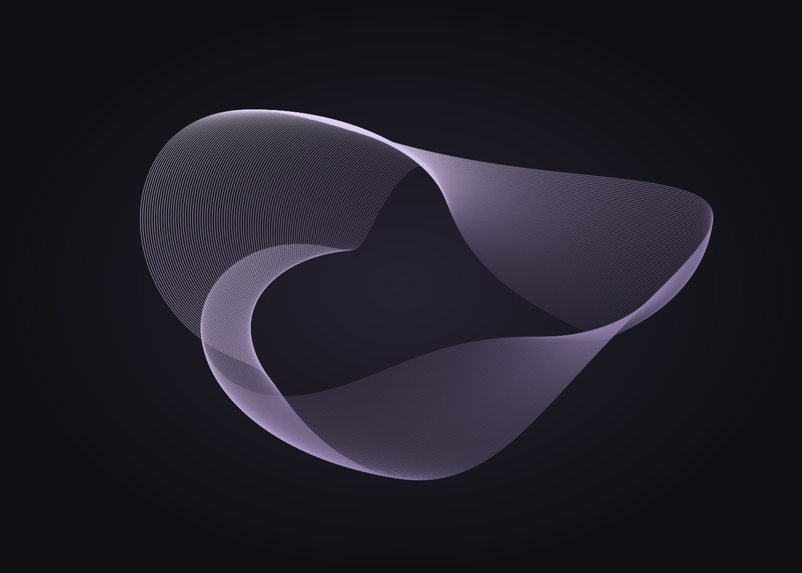
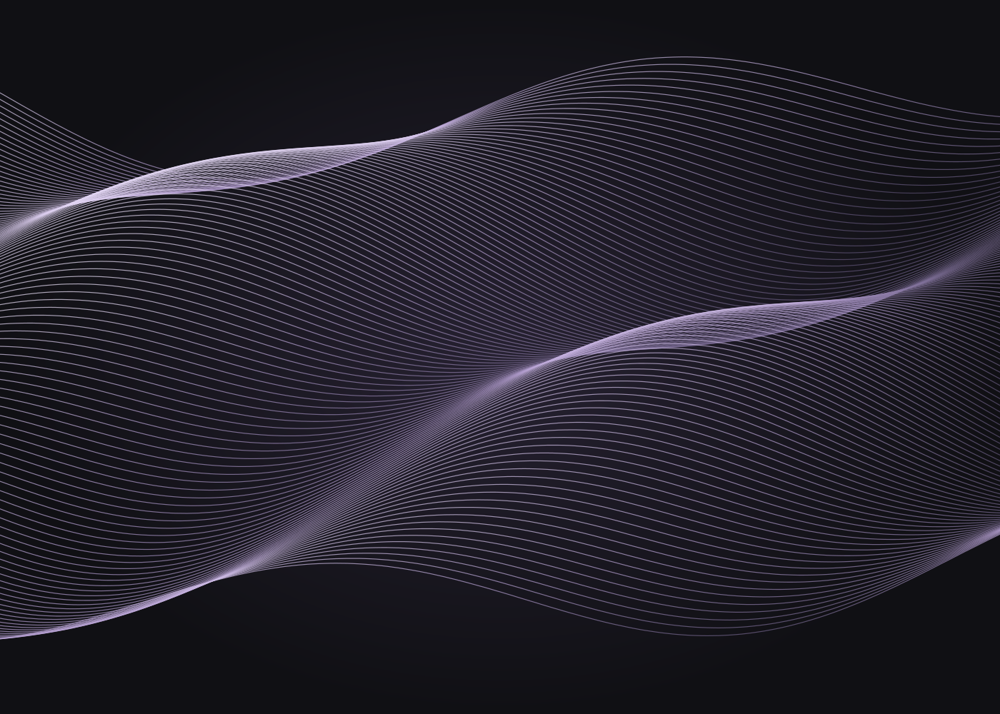

01 / STUDIO DEMO
Audiovisivo
Forme di risonanza
Una possibile relazione tra materia sonora e forma visiva.
COMPOSIZIONE / VISUAL ART
Una pratica tra composizione elettroacustica,
immagine e ricerca.

IL PORTFOLIO
Una selezione dimostrativa. Titoli e visual sono segnaposto per i lavori del portfolio.
Audiovisivo
Una possibile relazione tra materia sonora e forma visiva.

02 / STUDIO DEMOComposizione
Un ascolto dello spazio, delle sue tracce e delle sue trasformazioni.
PRATICA ARTISTICA
Composizione elettroacustica e visual art: due linguaggi attraverso cui esplorare la relazione tra suono, spazio e percezione.
Bio & contacts ↗